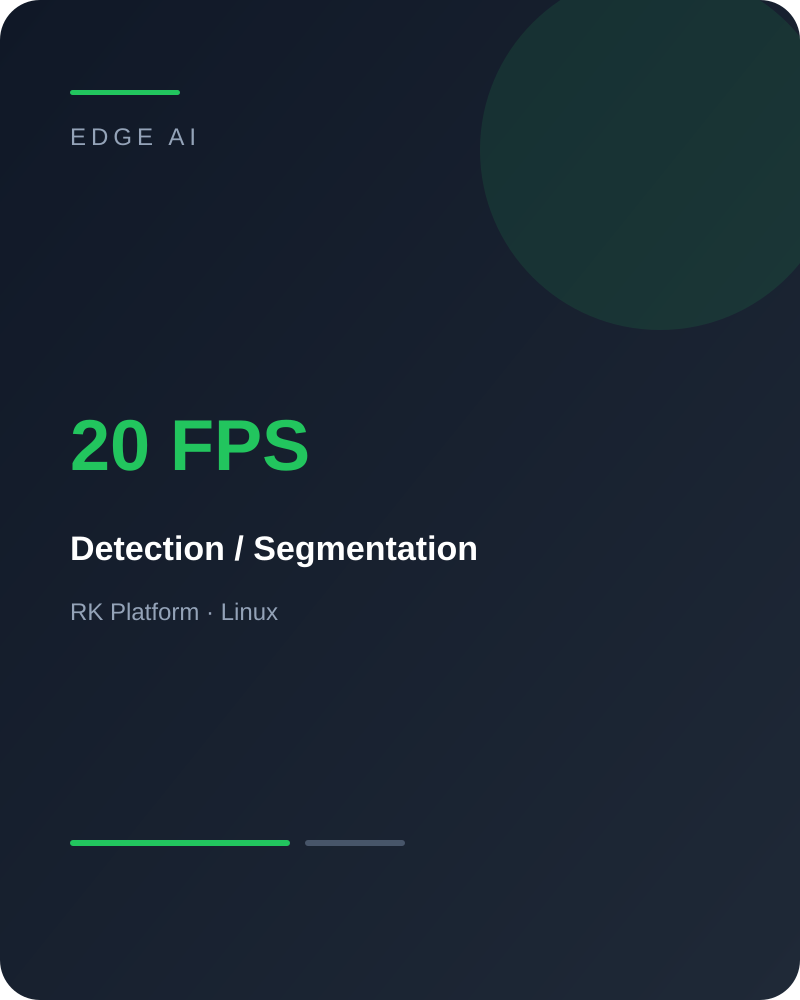

MQ
马清华
返回项目
← Back to projects
PROJECT
目标检测与分割部署
在边缘设备上完成目标检测、图像分割和跟踪算法部署，包括模型转换、前后处理、推理集成和性能优化。

项目定位
Edge AI Deployment
主要工作
目标检测 / 分割 / 跟踪算法部署
设备端推理链路整合
前后处理适配
RK 平台性能优化
Linux 环境联调
结果
RK 平台约 20 FPS
形成多任务视觉能力
设备端实时推理